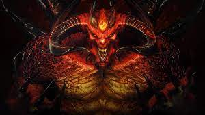

The King That Started It All, Diablo 2.
"Diablo II" achieved immense popularity and acclaim for several reasons:
Engaging Gameplay Loop: The game offered a highly addictive gameplay loop centered around exploring dungeons, battling hordes
of monsters, collecting loot, and leveling up characters. Its action-packed combat and rewarding progression system kept Players
invested for countless hours.
Deep Character Customization: "Diablo II" featured a diverse selection of character classes, each with unique abilities and
skill trees. Players could customize their characters extensively, experimenting with different builds and playstyles to
suit their preferences.
Endless Replayability: The game boasted procedurally generated levels, randomized loot drops, and a variety of difficulty
levels, ensuring that each playthrough felt fresh and unpredictable. The introduction of online multiplayer further enhanced
the replayability, allowing players to team up with friends or compete against others in a dynamic and ever-changing world.
Rich Lore and Atmosphere: Set in the dark and atmospheric world of Sanctuary, "Diablo II" featured a compelling storyline,
immersive environments, and memorable characters. The game's lore, coupled with its haunting soundtrack and atmospheric visuals,
created a captivating and immersive experience for players.
Social and Online Features: "Diablo II" was one of the first multiplayer-focused ARPGs, allowing players to connect online
and engage in cooperative or competitive gameplay. The game's robust online features, including chat rooms, trading, and PvP
(player versus player) battles, fostered a vibrant and active community that contributed to its longevity and popularity.
Continued Support and Expansion: Blizzard Entertainment provided extensive post-launch support for "Diablo II," releasing
several expansion packs and updates that introduced new content, features, and improvements. This commitment to ongoing
development helped sustain player interest and enthusiasm for the game over the years.
Overall, the combination of addictive gameplay, deep customization, endless replayability, immersive atmosphere, and robust
online features contributed to the enduring popularity of "Diablo II" and solidified its status as a classic in the action
role-playing genre.
What did Diablo 2's Success Lead To?
"Diablo II" had a significant impact on the gaming industry and influenced several aspects of action role-playing games (ARPGs)
and video games in general. Here are some ways in which "Diablo II" influenced the gaming landscape:
Expansion of the ARPG Genre: "Diablo II" popularized the ARPG genre and expanded its audience. Its success demonstrated the viability
of real-time action combat, deep character customization, and loot-driven gameplay, inspiring numerous developers to create similar games.
Online Multiplayer and Social Features: The online multiplayer component of "Diablo II" was groundbreaking at the time of its release.
It introduced features such as online chat, trading, and cooperative gameplay, setting a precedent for future online experiences in ARPGs and other genres.
Procedural Generation and Randomized Content: The use of procedural generation to create randomized levels, loot drops, and encounters
in "Diablo II" contributed to its replayability. This approach became a staple feature in many subsequent ARPGs and roguelike games, enhancing
their longevity and variety.
Character Customization and Skill Trees: The deep character customization and skill tree system in "Diablo II" set a standard for player
choice and progression in ARPGs. Many games that followed adopted similar systems, allowing players to tailor their characters to suit their
preferred playstyles.
Expansion Model and Post-Launch Support: "Diablo II" popularized the expansion pack model, with the release of "Diablo II: Lord of Destruction"
adding new content, classes, and features to the base game. This approach to post-launch support became common in the industry, with many games
offering expansion packs or downloadable content (DLC) to extend their lifespan and revenue.
Cultural Impact and Legacy: "Diablo II" left a lasting legacy in gaming culture, with its characters, lore, and gameplay mechanics remaining
influential to this day. The game is fondly remembered by fans and continues to receive updates and remasters, showcasing its enduring appeal.
In summary, "Diablo II" had a profound impact on the gaming industry, shaping the ARPG genre and inspiring developers to create new games that
build upon its innovative features and successful formula.
